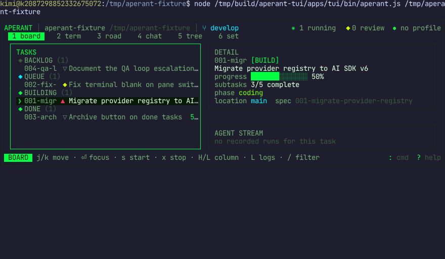
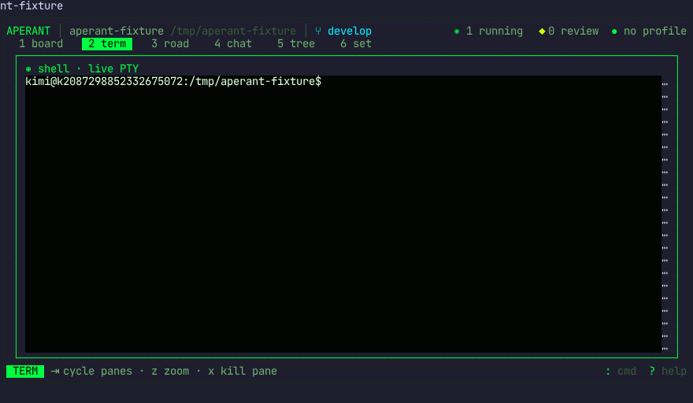
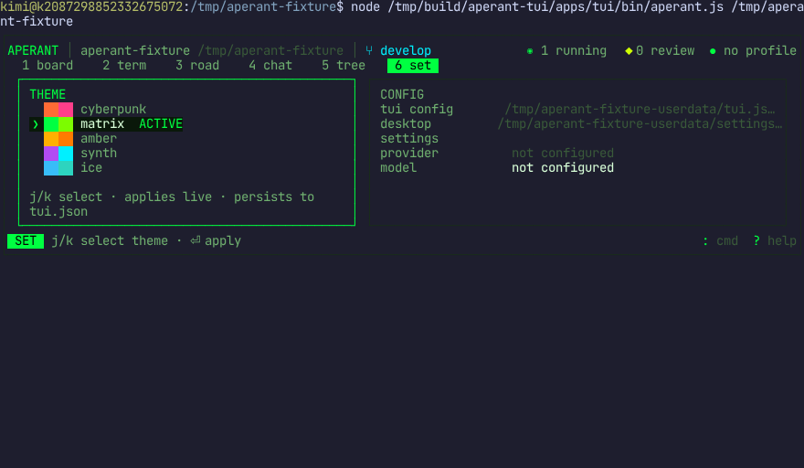
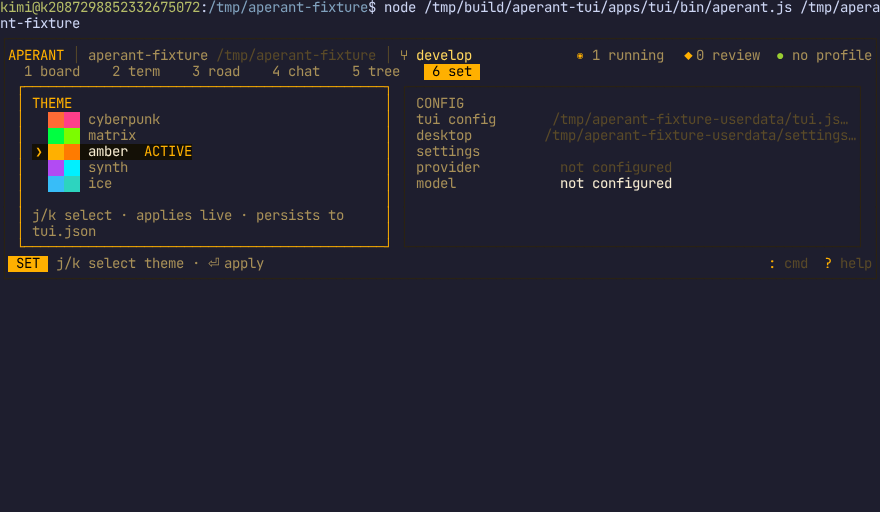
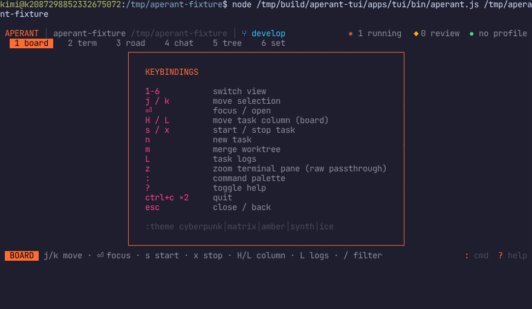
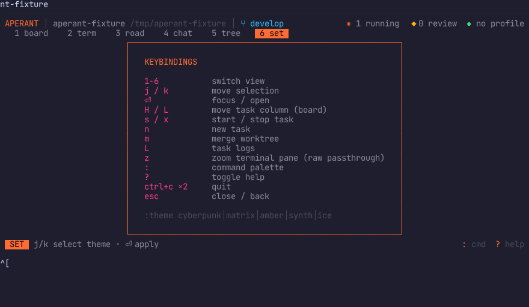

EVIDENCE
Recorded, hashed, re-runnable
Every gate drives the real TUI as an end user through a terminal-automation harness:
per-step JSON envelopes, text snapshots, rendered screenshots with SHA-256, and asciicast
recordings. Runs are scoped directories under evidence/phase-N/ in the repo.

PASS — 4 real tasks from .auto-claude/specs · real branch · real counts

PASS — live PTY — real bash prompt inside the pane

PASS — matrix — boot-loaded from persisted tui.json

PASS — amber — palette command applied live: 23,846 px changed

PASS — KEYBINDINGS — full-area replacement after bleed-through fix

PASS — move persisted · vendored AgentManager real auth outcome

PASS — all 8 phase-1 waits re-matched on a fresh session
Run register
| run | scope | result |
|---|---|---|
| run-20260811T233239-phase1-gate | phase 1 · first drive | RED — caught D1 (clipped panel titles) |
| run-20260812T003000-phase1-gate-recheck | phase 1 · recheck + theme probe | GREEN — 13/13 waits |
| run-20260812T011430-phase2-gate | phase 2 · first drive | RED — caught D4 (stale keybinding closures) |
| run-20260812T011904-phase2-gate | phase 2 · recheck + P1 regression | GREEN — restart-persistence proven |
| run-20260812T045402-moonshot-live-gate | phase 2.5 · live Moonshot/Kimi E2E | GREEN — 0 fails · agent wrote real code · secret scan clean |
| run-20260812T055219-phase35-gate | phase 3.5 · observability (pre-D11 tokens) | GREEN — 0 fails · caught D11 (v7 usage shape) |